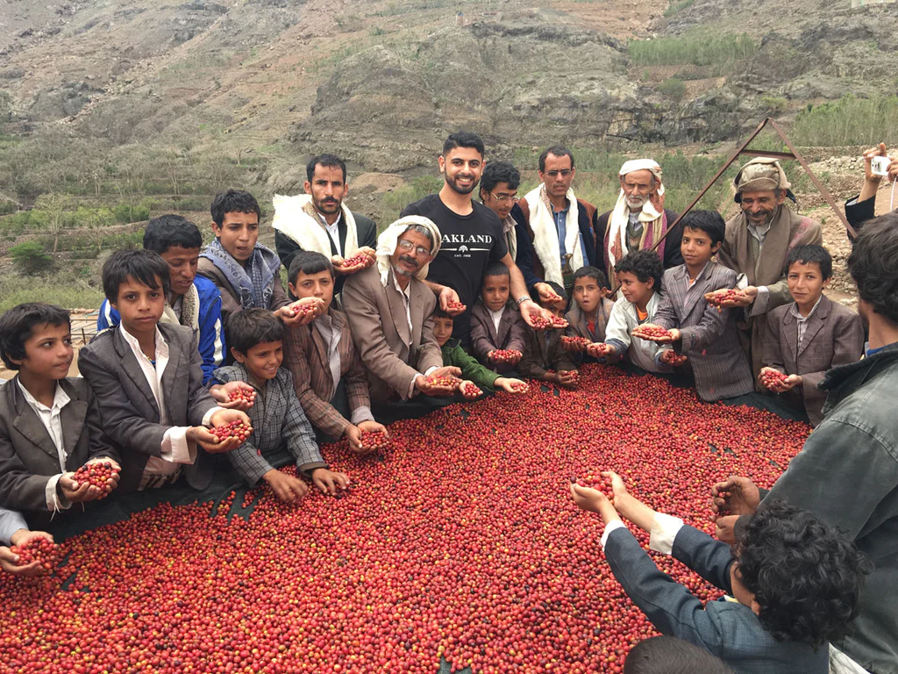

THE PORT OF MOKHA STORY
400 YEARS IN THE MAKING
This is the improbable journey of a Yemeni kid from San Francisco who fell in love with coffee, went
back to his homeland to befriend farmers, and inspired them to elevate their crops.
This is an unlikely tale of survival and revival. Of guardian angels, narrow escapes. This is a story with a
happy ending: the moment you get to experience coffee unlike anything you’ve ever had before.
YEMEN'S COFFEE HISTORY
An Islamic Scholar and Sufi mystic discovers that if he sets a pot of water over his cook fire, and boils
the seeds of a certain fruit that grows wild in the hills, the water turns a muddy brown. When he drinks
this brew, it lifts his spirit, awakens his senses, and allows him to pray and study through the night. This
Monk of Mokha shares his discovery with his brothers and sisters, and before long, this drink becomes
prized among the Yemeni people. Coffee starts getting cultivated in the mountain and valley terraces,
and shared with pilgrims and traders who visit the country.
For 150 years, starting in the 16th century, Yemen was the exclusive coffee supplier to the entire world.
All coffee shipped out of the region via the Port of Mokha, on the Red Sea. Yemen’s unique microclimate
and high elevation where coffee grew produced drought-resistant plants that yielded complex coffees
with sweet, chocolatey flavors. To imitate Yemeni coffee, many coffee houses would add chocolate to
drinks brewed from beans of other origins (hence the term ‘mocha’). It is thought that sometime in the
mid-1600’s, an Indian pilgrim smuggled seven green coffee seeds out of the country, and from those
seeds, coffee cultivation spread across the planet and grew into a worldwide commodity. Though 90%
of the world’s coffee can be genetically traced back to Yemen.
FAST FORWARD TO SAN FRANCISCO, 2013.
As a kid growing up in San Francisco’s Tenderloin, Mokhtar Alkhanshali never liked coffee that much. It
tasted dark and bitter. As a child, Mokhtar traveled with his parents back to the mountain town of Ibb,
Yemen, where his family is from. He used to walk through the terraced farms with his grandmother and
pick bright red coffee cherries - the fruit that holds the coffee beans - right off the trees.
One day in 2013, Mokhtar walked into a specialty coffee shop in San Francisco and tried his first cup of
single origin specialty coffee. He took that first sip and experienced a burst of intriguing flavors that
struck him like lightning. It was a moment where his past and future collided, igniting his curiosity about
his homeland and coffee, and setting him on a path that would change his life.
Mokhtar started obsessively reading, tasting, and learning everything he could about coffee. But no
matter what cafes he visited, he didn’t find any coffee from Yemen. This was due to the fact that the
quality of Yemeni coffee had greatly declined over the past century. Farmers discovered they could
make more money cultivating the drug khat, a stimulant that is legal in Yemen, but outlawed in many
other countries. It is estimated that up to 40% of Yemen’s water supply is going towards khat
production, and the country is in near term danger of running out of water.
As Mokhtar’s passion grew, he resolved to help Yemen share its lost treasures with the world. First he
studied. He trained to become a certified Q grader from the Coffee Quality Institute. This rigorous
course involves learning how to cup, taste, identify, and grade both green and roasted coffee. Once
Mokhtar got his certification, he packed up and left for Yemen.
Mountain-top coffee farms in Yemen
coffee tree branch full of ripe cherries
Yemeni coffee farmer
Mountain-top coffee farms in Yemen
For 150 years, starting in the 16th century, Yemen was the exclusive coffee supplier to the entire world.
All coffee shipped out of the region via the Port of Mokha, on the Red Sea. Yemen’s unique microclimate
and high elevation where coffee grew produced drought-resistant plants that yielded complex coffees
with sweet, chocolatey flavors. To imitate Yemeni coffee, many coffee houses would add chocolate to
drinks brewed from beans of other origins (hence the term ‘mocha’). It is thought that sometime in the
mid-1600’s, an Indian pilgrim smuggled seven green coffee seeds out of the country, and from those
seeds, coffee cultivation spread across the planet and grew into a worldwide commodity. Though 90%
of the world’s coffee can be genetically traced back to Yemen.
FAST FORWARD TO SAN FRANCISCO, 2013.
As a kid growing up in San Francisco’s Tenderloin, Mokhtar Alkhanshali never liked coffee that much. It
tasted dark and bitter. As a child, Mokhtar traveled with his parents back to the mountain town of Ibb,
Yemen, where his family is from. He used to walk through the terraced farms with his grandmother and
pick bright red coffee cherries - the fruit that holds the coffee beans - right off the trees.
One day in 2013, Mokhtar walked into a specialty coffee shop in San Francisco and tried his first cup of
single origin specialty coffee. He took that first sip and experienced a burst of intriguing flavors that
struck him like lightning. It was a moment where his past and future collided, igniting his curiosity about
his homeland and coffee, and setting him on a path that would change his life.
Mokhtar started obsessively reading, tasting, and learning everything he could about coffee. But no
matter what cafes he visited, he didn’t find any coffee from Yemen. This was due to the fact that the
quality of Yemeni coffee had greatly declined over the past century. Farmers discovered they could
make more money cultivating the drug khat, a stimulant that is legal in Yemen, but outlawed in many
other countries. It is estimated that up to 40% of Yemen’s water supply is going towards khat
production, and the country is in near term danger of running out of water.
As Mokhtar’s passion grew, he resolved to help Yemen share its lost treasures with the world. First he
studied. He trained to become a certified Q grader from the Coffee Quality Institute. This rigorous
course involves learning how to cup, taste, identify, and grade both green and roasted coffee. Once
Mokhtar got his certification, he packed up and left for Yemen.
RESTORING YEMEN'S COFFEE
FARMS
Steps of the Mokha Method
Surverying the Land
Mokhtar spend 3 years touring Yemen’s coffee farms,
many accessible only by foot. He took meticulous notes on climate,
elevation, soil, and health of the coffee trees. Most importantly,
he spent time getting to know farmers and their families,
hearing their stories, and learning about their practices.
Surverying the Land
Mokhtar spend 3 years touring Yemen’s coffee farms,
many accessible only by foot. He took meticulous notes on climate,
elevation, soil, and health of the coffee trees. Most importantly,
he spent time getting to know farmers and their families,
hearing their stories, and learning about their practices.
Educating Farmers
Through regular meetings and workshops, we educate farmers on best practices,
on everything from planting to harvesting to processing and storing.
We’ve even gone as far as taking a group of farmers to Ethiopia so they could exchange ideas and knowledge.
Economics: Quality Pays
We offer interest-free microloans to farmers as well as pay the highest prices for beans
that meet our quality standards.
This provides the financial incentive (and patience) to pick only the ripest cherries.


Producing
Once coffee is produced, we keep farmers in the loop on it’s journey to other parts of the world.
We continually update them with news of cupping results, ratings, and reviews.
Impact: reverseing the drug trade
Our goal in working with famers is elevate their quality
of life through improving the quality of their crop. To that end,
we are proud that we’re seeing more farmers opt for growing coffee instead of Khat.
We’ve promoted gender equity by requiring all coffee collectives have boards with at least 50% women.
And our microloans have financed weddings and community projects in our farmers' villages.
NO ONE SAID IT WOULD BE EASY
MOKHTAR'S JOURNEY
They say timing is everything. And for Mokhtar, his timing couldn’t have been worse.
In March of 2015, after years of working with his farmers,
Mokhtar was ready to share the fruits of their labors with the world.
He had two suitcases packed with green coffee samples from different farms.
He planned to take these to SCAA,
to be judged at the world’s biggest coffee conference in Seattle.
On the eve of his departure, civil war broke out.
Both civilian airports were bombed and no commercial flights were operating.
While neighboring countries like India, Somalia,
and Pakistan were finding ways to evacuate their citizens,
the US was not taking any action. Mokhtar was stuck.
His coffee dreams were stuck. And as the distant sky lit up from falling bombs,
Mokhtar resolved to whatever he needed to do to get out.
Mokhtar headed for the Port of Mokha - the world’s original coffee trading port.
He hired a fisherman to take him across the Red Sea in a small fishing boat.
With his two suitcases of coffee, and the clothes on his back, the boat traveled for 7 hours -
with no radio or navigation instruments -
before reaching the shores of Dijibouti, a small country on the horn of Africa.
“It’s a miracle that this coffee is here.” – Mokhtar
Upon his return, Mokhtar’s harrowing boat escape from Yemen was covered extensively in the press.
And several days later, at SCAA in Seattle. In a blind cupping, Port of Mokha coffee was awarded a 90+,
beating out many coffees from world-renowned farms. (Incidently, in February, 2017,
Coffee Review rated Port of Mokha’s Hayma Microlot a 97, the highest rating the coffee review bestows.)
Now it was time to share his coffee with the world.
Blue Bottle founder James Freeman describes the moment he first tasted
Port of Mokha coffee during a blind cupping: “It absolutely sparkled and I thought,
“this is what angels singing tastes like.” I had no idea what the coffee was,
but when I found out it was from Yemen, I was overjoyed.” Blue Bottle began selling
Port of Mokha coffee in limited release. And Mokhtar was able to share the good news
with the farmers back in Yemen, whose future,
despite all the political unrest and economic challenges, was finally looking brighter.
FROM YEMEN TO YOU, WITH LOVE.
At Port of Mokha, we believe that the very best coffee does more than provide
an incredible experience of drinking it.
It creates ripples of positive impact that can improve lives, lift economies,
and revitalize cultures.
You can drink Port of Mokha because you want to support a worthy cause.
Or because it just happens to be the best coffee in the world. Enjoy.
Coffee is about what you build together.
It’s about journeys, it’s a miraculous adventure.
It crosses cultures, boundaries,
and messy politics to go from the producer’s hands all the way to us.
And in this cup, it brings everyone together.
Mokhtar Al-Khanshali
Founder of Port of Mokha